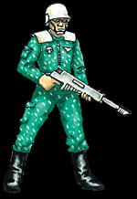

Imperial Forces |
Force Disposition Introduction |
Ork Forces |
|

Stationed primarily in the upper reaches of Hive Tartarus, The Jopall Indentured Squadrons are an integral part of the thinly-spread Imperial defence lines holding back the steadily growing numbers of Orks teeming around the beleaguered Hive. However, sure of their abilities as marksmen and confident in their ability to mobilise a staggering amount of manpower should the Orks breach the hive walls, the toll the Jopall are taking on the beseiging Orks is considered exceptional.
On their homeworld, the Jopall owe their government money as soon as they are born. Taking up valuable resources throughout their childhood, they incur a debt that they cannot repay until adolescence. Most citizens of Jopall spend the majority of their adult lives working off the debts they incur during the first part of their lives. There are ways around this punishing system, however; the citizen can either borrow money from the local Lord, or they can work off the debt to the government by joining the Jopall Indentured Squadrons. This system explains why the Jopall are never short of recruits.
The Indentured Squadrons favour a defensive stance where resources are committed at the last moment. This makes them extremely unpopular with the fanatically committed Death Korps of Krieg stationed around the perimiters of Hive Tartarus. These two styles of warfare have complemented rather than detracted from each other, despite the resentment that is rapidly growing between the two factions. The Death Korps are disgusted by the very idea that a soldier should fight to work off debts rather than serving out of a sense of purest duty. They find the relaxed attitude to command structure in the Indentured Squadrons to be appalling and inefficient. However, it is just this fact that makes the Jopall so unique.
|
| ||||||||||||||||||||||||||||||||||||||||||||||||||
|
Individuality is a trait that is openly encouraged in the Indentured Squadrons, and the ingenuity and commitment of the soldiers is rewarded by a small financial recompense. Noted for their unscrupulous tactics, the Jopall have familiarised themselves with Tartarus to an exceptional degree, assimilating many of their soldiers into the Hive Militia and utilising the resources of the Hive against the Ork invaders. As a result of this, squads of Jopall soldiers have poisoned the Ork's water supplies with toxic waste, snipers have harried the Ork lines around the clock from the towers surrounding Tartarus, and the tunnels riddling the outskirts of Tartarus have been collapsed, instantly forming an intricate network of trenches from which the Death Korps have been operating. This spontaneous and uncoordinated activity is looked upon with contempt by many of the more traditional officers, but the results are undeniably valuable to the war effort. One instance in particular highlights both the potential the infamous Jopall guile can achieve and also the tremendous strain that it can put on the Imperial resources. A small squad of low-ranking Jopall officers managed to isolate a tribe of Orks who had somehow obtained several Imperial vehicles. These troop transports were painted with crossed axes and hung with skulls, but unlike the rusting, smoking heaps the Orks normally employ, these were well-maintained and comparatively clean. Masquerading as liaisons from Von Strab's Personal Guard, the Jopall officers negotiated the unauthorised transfer of three Imperial Basilisks and a substantial amount of artillery shells with a high-ranking Ork mechanic. The Mek, as it called itself, was allegedly frothing at the mouth with excitement, and after thoroughly checking the Basilisks it paid the Jopall cadre substantially for the artillery pieces. However, the Basilisk's undercarraiges were each strung with thin lines of plastic explosive covered in dust and grime. As soon as the cadre of officers were safely ensconced in the towers of Tartarus, observing the Mek proudly parading his newly bolstered artillery battalion to the Warlord Morbad himself via a satellite camera, the remote devices each officer carried detonated the plastic explosives. This triggered an explosion just destructive enough to detonate the Basilisk's ammunition, causing a chain reaction that consumed a full sixth of the Ork's artillery. The voluntary loss of three Imperial Basilisks was unforgivable, and the officers were stripped of rank. However, the soldiers in question now number among the most popular of the entire company. The squadrons of the once-peaceful agriworld Jopall are equally well known for their marksmanship as they are for their greed. The question of recompense is often raised by the officers of the Indentured Squadrons, and every Ork life they take is tallied somewhere around the soldier's person, to be raised at a later date. Excellent snipers, they are stationed in the upper reaches of Hive Tartarus, and are currently thinning the numbers of the secondary Ork drops laying siege to the outer reaches of the hive. However, the Orks are creeping further into the Hive by the day, and soon the Indentured Squadrons may have to resort to close combat. | |||||||||||||||||||||||||||||||||||||||||||||||||||